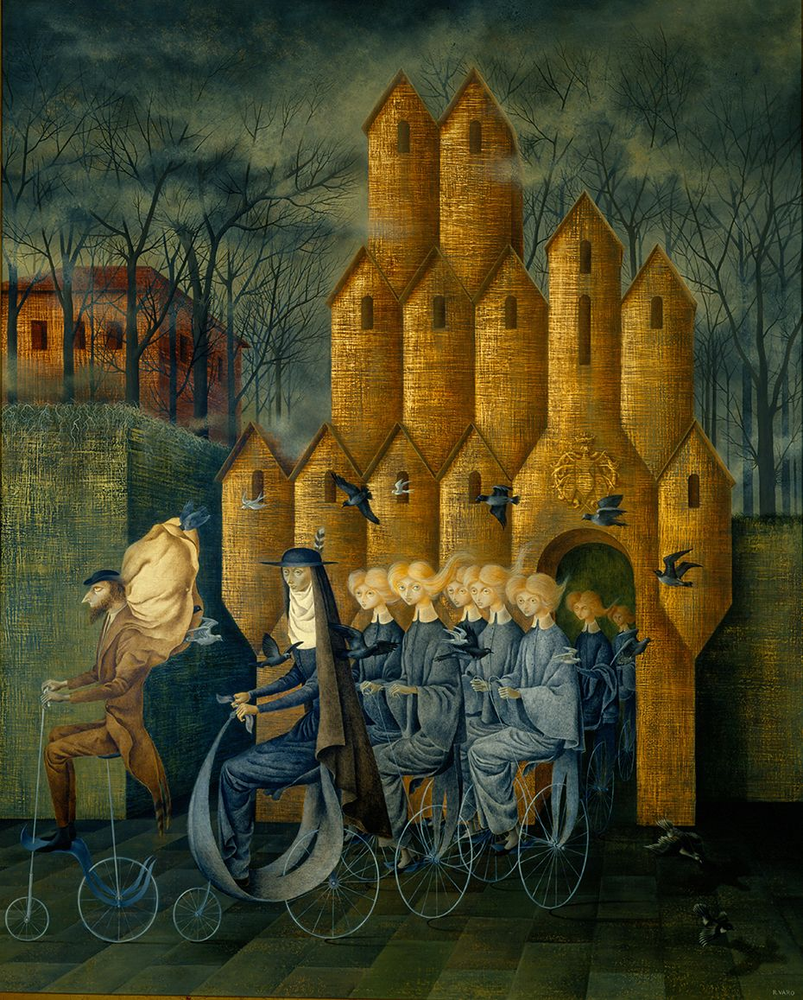

| FICHA TÉCNICA | ||
| Título | : | Haz-pausa |
| Técnica | : | Video instalación intergenerativa |
| Dimensiones | : | Variables |
| Año | : | 2019 |
| Autor | : | Maria Da Conceicao |
Soy Artista Estudiante de Medios Mixtos con el interes de vincular el espacio fisico y el digital, por medio de una propuesta plástica que ademas genere una experiencia sencible en un abiente caotico como lo es el Metro de Caracas.
M. Da Conceicao
Abordaje Formal
Haz-pausa es una video instalación intergenerativa ubicada en el Metro de Caracas, la obra está conformada por un conjunto de calcomanías repartidas a lo largo de las estaciones y vagones de la línea 1, estas muestran imágenes fotográficas editadas que se ven siempre obstaculizadas por un código de respuesta rápido (Qr); otras de sus características es que son de colores saturados y poseen un tamaño de media carta.
Los Qr pueden ser escaneados por cualquier aplicación competente, o por la propia aplicación diseñada por el artista, la cual funciona como álbum de colección. La lectura del Qr permite visualizar animaciones en formato gif que hacen loop en alta velocidad, estas animaciones siempre tienen relación con la imagen que se aprecia en las calcomanías y están dirigidas a representar el caos urbano.
Se afirma que la obra busca apropiarse del espacio público del Metro de Caracas, y del espacio íntimo de los dispositivos móviles, clasificándola como una pieza de carácter intergenerativa porque el espectador es quien construye la narrativa según su propio recorrido, donde el azar tiene un papel importante al igual que lo lúdico, ya que la obra llama a la interactividad por medio de la búsqueda de los mensajes ocultos tras todos los Qr.
{kind=link}
{kind=link}
{kind=link}
{kind=link}
{kind=link}
{kind=link}
Elementos de Lenguaje Plástico
Funciones Representativas y Funciones Simbólicas
Ciudad de Caracas
“Haz-pausa” es una obra que en primera instancia representa a la ciudad de Caracas a través de la fotografía de algunos espacios urbanos, donde pese a la edición digital del artista se logran reconocer, mostrando así, escenarios donde se desarrollan las dinámicas particulares de la ciudad, actividades bien marcadas en el imaginario colectivo.
Metro de Caracas
El uso del espacio público Metro de Caracas para la instalación de la obra “Haz-pausa” nos es casualidad, ya que si bien, es utilizado para la distribución del mensaje plástico, su función no se queda en la de mera herramienta, ya que al mismo tiempo ese mensaje nos habla del ritmo acelerado de la vida urbana, perceptible sobre todo en los espacios de tránsito; de esta manera se afirma la existencia de una relación simbólica entre el medio y el mensaje, donde el espectador participa en la obra como protagonista del problema abordado.
Espacio Telemático
La obra no se queda únicamente en el espacio físico, ya que para poder completar el discurso de la pieza es necesario de una aplicación móvil, específicamente de un lector de códigos de respuesta rápido (Qr), esto permite al usuario transportarse entre dos polos opuestos, pasando de una lectura en un ambiente caótico como lo es cualquier transporte público, a un espacio más privado e incluso intimo para algunas personas. De modo que se juega con una doble visión del espectador, una como colectivo, y otra como individuo, permitiendo el alcance reflexivo a diferentes niveles.
Recorrido Intergenerativo
La obra con sus elementos tiene la característica de incidir simbólicamente en el recorrido de las personas, ya que, al intervenir un espacio público, rompe con lo cotidiano generando inquietudes y curiosidad; pero esas impresiones son dadas por el azar, donde el usuario en su propio recorrido se encuentra con la pieza, de modo que va construyendo el discurso de forma intergenerativa y eso representa una experiencia visual que desde lo simbólico busca de generar reflexión a partir de ese recorrido monótono.
Aplicación móvil
Si bien los Qr pueden ser escaneados a través de cualquier aplicación, la obra cuenta con una aplicación propia que funciona como álbum de colección, donde el usuario puede tener siempre a la mano las animaciones ya descubiertas y también saber cuántas le faltan; de esta manera se incentiva un juego de búsqueda del tesoro que simbólicamente cambia la percepción del espacio.
Calcomanías
A través del stiker o la calcomanía, “Haz-pausa” interviene el espacio público del Metro de Caracas, esta técnica se reconoce como una vertiente del grafiti, y aunque la obra visualmente no posea una estética directamente asociada con este fenómeno, igualmente conserva otras de sus características, como el anonimato, lo clandestino y la crítica, factores importantes en el discurso de la obra, ya que el medio simboliza la postura del artista en contra de la situación decadente del espacio donde está plasmado. Para el espectador es un acto rebelde que le grita “estoy en contra”.
Códigos de respuesta rápida (Qr)
Los códigos de respuesta rápido (Qr) es la evolución del código de barras, estos pueden almacenar datos codificados, por lo que son útiles para guardar información. Existen nuevas tecnologías mucho más avanzadas que este simple medio, sin embargo, en los últimos años ha conseguido popularizarse en el país por diferentes iniciativas en la política, lo que hace esté presente en la cultura y no sea un ente extraño o ajeno con el cual identificarse.
GIF animados
Las animaciones en formato GIF que se perciben tras el escaneo de los Qr, están cargadas de elementos visuales que acompañan el discurso de la obra. Pese a que cada GIF es diferente y que cada uno posee una riqueza visual propia, ciertos factores se repiten a lo largo de la serie, como lo es, la velocidad del loop, que tiende a ser rápida; los colores saturados, que se armonizan entre sus propios matices intensos; la superposición de elementos, que hace alusión a la técnica del collage; y el efecto glitch, que corrompe la fotografía y provoca un choque en la animación. Todos estos elementos sirven para reforzar la idea principal, el hecho de que la vida urbana que se comparte en los espacios públicos tiende a caracterizarse por la superabundancia de acontecimientos que llevan al caos, pero que se naturaliza por forma parte de cotidianidad, de modo que las personas siguen un ritmo impulsado por la monotonía.
El Metro de caracas es un icono para los ciudadanos de la capital, ya que no solo se muestra como un medio de transporte, sino que representa la conexión geográfica y cultural de esta ciudad, donde convergen todo tipo de pensamientos sociales, ideológicos, religiosos, etc. Actualmente es un medio indispensable para el traslado en la ciudad y aunque no es de mucho agrado por las situaciones incomodas que genera, la urbanidad se comporta de manera distinta ante su ausencia. Lo que convierte a este transporte en icono es la manera en que se instala en la historia de una metrópolis y en el consiente de las personas quienes fácilmente reconocen los elementos del mismo y de inmediato los lleva a pensar otra cosa, ligado sobre todo a su entorno y relación con el mismo.
Análisis Iconográfico
En el 2018, año en que se concibe la obra, en la ciudad de Caracas se ha naturalizado ciertas acciones, específicamente en el transporte metro, donde el comportamiento de las personas a cambiado radicalmente desde su inauguración, muchos usuarios que lo utilizan ahora no vivieron o no recuerda esa etapa que a veces se cuenta acerca no solo del servicio que prestaba esta empresa si no también la conducta de los individuos, que parecía transformarse tras entrar en esta instalación. Ahora si bien las personas parecen transformarse igualmente, es sin embargo una metamorfosis negativa donde la hostilidad y el individualismo toma protagonismo.
Para este año el artista ha recopilado muchas experiencias tras cuatro (4) años de carrera universitaria, así como diversas perspectivas al recorrer variadas líneas del transporte público, como lo es la vía hacia los Teques y zoológico, a parte de la línea uno (1) espacio en que decide realizar la obra por ser la más usada por toda la población que hace vida en la ciudad, aunque no necesariamente resida en ella.
Análisis Iconológico
Remedios Varo
Título: Bordando el manto terrestre
Fecha: 1961(México)
Técnica: Oleo sobre masonita
Dimensiones:100 x 123 cm
Autor(a): Remedios Varo
"Bordando el manto terrestre" forma parte de un tríptico realizado por Remedios Varo en el que también se observan las obras tituladas "hacia la torre y "la huida", las cuales en conjunto narran una historia, pero de igual modo como pinturas individuales nos transmiten una abundante riqueza plástica, lo suficiente como para dedicarles un análisis detallado a cada una.
-
"Bordando el manto terrestre"
-
Análisis
La obra que a continuación se analizará es la ubicada en el medio del tríptico; en ésta pintura se visualiza un conjunto de mujeres bordando en el cuarto de una torre, de la misma salen telas que contienen construcciones, árboles, agua, barcos, animales e incluso personas. A dentro de la torre, además de las mujeres, se encuentran dos personajes envueltos en túnicas cubiertos hasta el nivel de los ojos. Una de las figuras se ubica en el fondo tocando la flauta, y la otra se centra en el medio de la habitación sosteniendo un libro en una mano, y revolviendo lo que parece un reloj de arena con la otra, de este recipiente salen hilos que se conectan con las mesas de trabajo de las bordadoras, las cuales se sientan en semicírculo y entre ellas, pese a su apariencia igual de cabellos rubios y vestidos azules, solo una no está concentrada en su oficio, y en cuya mesa de trabajo se aprecia el bordado de una pareja, pero es casi imperceptible a simple vista.
-
Las obras de Remedios requieren de mucha contemplación, pues la composición del cuadro lo exige, donde cada elemento no es casual ya que a través de ellos es posible hilar un discurso y llegar a comprender lo que quiso representar la artista. Uno de los elementos más resaltantes de la pieza son las mujeres de igual apariencia en la pintura, las cuales representa a la artista en modo de autorretrato, hecho que suele repetir en casi todas sus obras, pero que en ésta particularmente simboliza las múltiples facetas que conviven en una sola persona. La acción de estar bordando nos dice que están tejiendo su destino, futuro que puede estar siendo controlado o reprimido por agentes externos como nos lo expresa la figura central que transmite cierta autoridad y misterio. De este modo la torre representa el lugar más alto simbolizando ese lugar del pensamiento donde se le da forma a las ideas.
-
"Hacia la torre"

-
"la Huída"
-
Entre las pinturas de remedios se puede afirmar que ésta en su complejidad es la que mejor nos habla de la vida de la artista; leyendo sus textos, cartas y biografía, nos damos cuenta que aquí refleja sus mayores influencias de joven, como el haber aprendido a bordar al estar estudiado en una escuela católica donde se sentía presa de esa estructura cultural. También el hecho de huir le tocó una vez a Varo debido a la guerra, donde junto a Benjamin Péret se van a México en busca de un ambiente más tranquilo. Se afirma que en México es el lugar donde la artista logra sus mejores manifestaciones y aunque existan críticas que señalan la ausencia de elementos icónicos mexicanos en su pintura, la artista responde en una entrevista inédita que "pintaría de la misma forma en cualquier lugar del mundo, puesto que proviene de una manera particular de sentir"; pero esa misma particularidad se tiñe de toda su cotidianidad, aunque la obra exprese más el modelo interior de la artista y contenidos latentes dados por los espacios imaginarios que crea y su interés por tratar temas universales, como es el caso de esta obra, que nos habla del control del destino propio. Meterse en la mente de la artista es un verdadero trabajo, sobretodo si no quieres caer en el psicoanálisis; sin embargo su obra viene de su manera particular de ver el mundo y tal como ella menciona viene de "la misma manera que toman cuerpo otras ideas. de sugerencias, por asociaciones de ideas, etcétera."